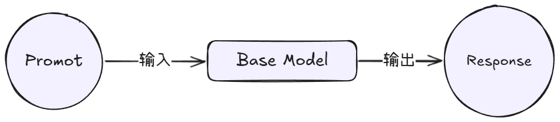
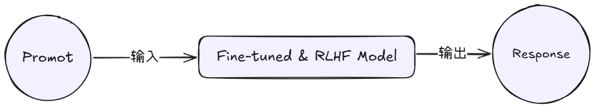
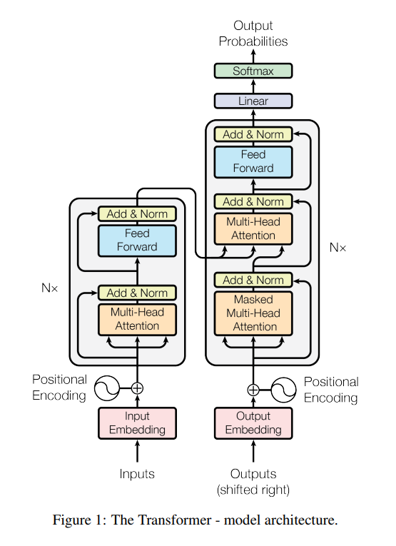
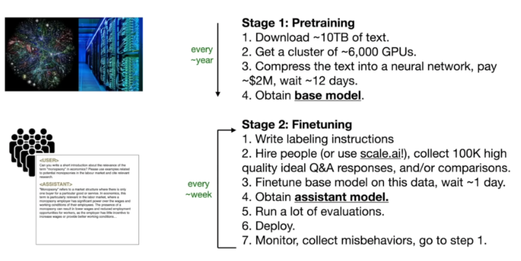
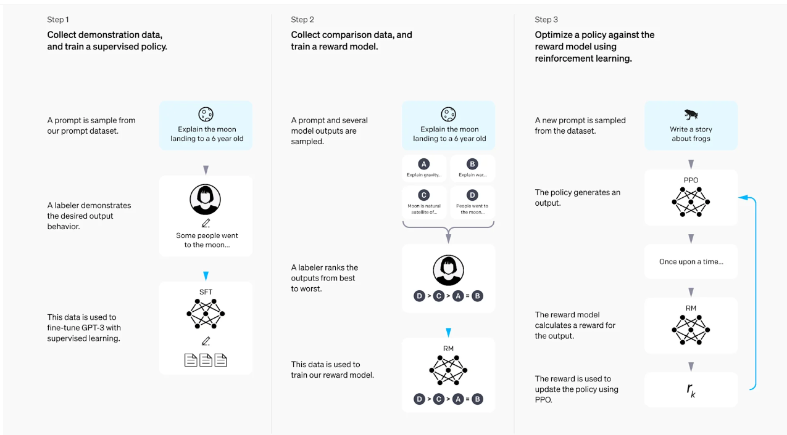
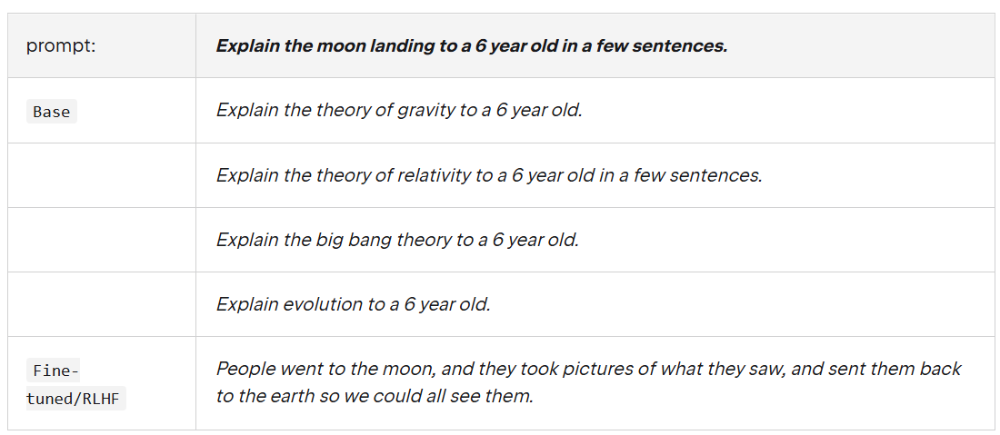

大模型是如何工作的？
-
大模型作为一个文本补充器，工作原理如下，

user prompt:
A banana is
model response
an elongated, edible fruit
-
大模型作为文档生成器，工作原理如下，

user prompt:
I want to buy a new car
model response:
What kind of car to do you want to buy?
我们能够注意到上面两个模型的区别在于：
-
第一个模型仅仅是作为文档的填充器来使用，根据前面已知的提示词去预测下一个最有可能出现的字符，然后将提示词和预测到的字符联合起来作为新的提示词再次传入模型中去预测下下一个最有可能出现的字符。这就是我们基于互联网数据进行训练的模型，它也被也被称为
Base Model。 -
第二个模型是一个文档生成器模型，它可以根据提示问题生成更像人类的回答。这就是
ChatGPT模型。ChatGPT是一个推理模型，它可以根据提示问题生成更像人类回答的内容。它在Base Model的基础上，额外添加了两个训练步骤：- 微调步骤(fine-tuning)
- 来自人类反馈中强化学习步骤（ reinforcement learning from human feedback）
Pre-training: Base Model
这是构造人工智能革命的核心，也是人工智能真正魅力的所在。
预训练基础模型的过程就是将网络中的大量数据输入给模型，并让它自己去学习。
正如GPT-3论文所说的，基础模型是在大量的互联网数据上训练的。这对像你我这样的普通人来说并非易事。它不仅需要获取数据，还需要强大的计算能力，例如 GPU 和 TPU。
不过别担心，我们仍然可以在自己的电脑上学习训练一个小型 GPT 模型。我将在下一节中向您展示具体方法。
LLM训练背后的创新支出在于引入了Transformer架构，该架构使得模型能够从大量数据中学习，同时保留输入不同部分之间关键的上下文关系。
通过维护这些关联，该模型能够根据所提供的上下文（无论是单个词语、句子、段落还是更广泛的内容）有效的推断出新的见解。凭借这种能力，LLM训练为自然语言处理和生成任务开辟了新的机遇，使机器学习能够更好地理解和回应人类交流。
用于训练基础模型的Transformer架构如下图所示：

这是一个基于神经网络的模型训练，采用了一些新的和旧的技术相结合，包括：tokenization, embedding, position encoding, feed-forward，normalization，softmax，linear transformation以及最为重要的是multi-head attention。
这是技术部分的内容都是你我双方非常感兴趣的。我们希望能清楚地理解这一架构背后的理念，以及具体的训练过程究竟是如何进行的。因此接下来的主题是，我么将深入研读相关论文、代码以及用于训练基础模型的数学原理。
Fine-tuning: Train the Assistant
微调方法最初是由OpenAI提出并实现的。这个方法非常简单，但是十分的有效:通过雇佣人工标注员创建大量的问答对话（如10万个问答对话），然后将这些问答对话输入给模型，让它从中学习。
该过程叫做微调，或许更常见的是其英文表达 fine-tuning。当模型训练完这10万个问答对话后，对于人类提出的问题，模型就会开始向人一样作出回应！
让我们来举一些带有标签的实例对话：
Human labeled Q&A
Q1: What is your name?
A1: My name is John.
Q2: What’s the capital of China?
A2: China’s capital is Beijing.
Q3: Summarize the plot of the movie Titanic.
A3: The movie Titanic is about a ship that sinks in the ocean.
通过训练模型掌握这些响应风格，相关上下文响应的概率将大大提高，从而能够更好地回应用户的提示。通过训练模型掌握各种对话风格，我们提高了模型对提示提供相关且符合上下文的响应的可能性。
这就是语言模型能够显得如此智能和像人类一样的原因；通过学习模仿现实世界对话的节奏和模式，它们可以逼真地模拟与用户的来回对话。
至此，我们可以说我们得到了一个模型助手(Assistant Model)
下图展示了从基础模型预训练到辅助模型微调的一些关键步骤：

(引用自 Andrej Karpathy’s build a GPT model from scratch))
RLHF: 基于人类的反馈进行强化学习
2022年1月，OpenAI发布了关于“对齐语言模型以遵循指令”的研究成果。在他们的博客文章中，他们描述了如何利用人类反馈进一步微调模型：

这个方法有点复杂。其思路是让模型从人类反馈中学习。他们不提供大约 10 万个带标签的问答对，而是收集用户的提问和模型的回答，然后让人类对它们进行排序。将排序后的对话作为最理想的问答样本，再次输入模型，让模型从中学习，从而提升其整体性能。
OpenAI在其博客上介绍了这一过程：
为了使我们的模型更安全、更实用、更符合用户需求，我们采用了一种名为“基于人类反馈的强化学习”（RLHF）的现有技术。客户通过 API 提交提示后，我们的标注员会演示模型应有的行为，并对模型的多个输出结果进行排序。然后，我们利用这些数据来微调 GPT-3 模型。
以下是基础模型与精细调校/RLHF响应的对比：

可以看出，如果没有微调和 RLHF，该模型只是一个文档补全器。
提示词工程
或许我们在日常表达时更愿意称之为 Prompt Engineering 。
即使经过微调和RLHF优化，该模型仍然需要一些辅助才能获得理想的响应。而这正是发挥 Prompt Engineering作用的地方。
简单来说，我们可以精心设计提示，从而从模型中获得所需的响应（有时甚至无需微调）。
如果你不想过多地钻研数学和代码，那么Prompt Engineering就是一个让你更加专注的好方法，因为它可以通过输入更好的提示来充分发挥 LLM 模型的优势。
现在我们来看一个例子：
prompt:
The sky is
output:
blue.
我们来尝试改进一下
prompt:
Complete the sentence:
The sky is
output:
blue during the day and dark at night.
通过在提示中加入一些指令，模型就会知道该做什么以及该如何回应。
我们来看另一个有趣的例子：
prompt:
When I was 6 my sister was half my age. Now I’m 70 how old is my sister?
output:
35
我们发现这个答案明显是错误的，正确答案应该输出67。模型似乎理解了问题，但它引用了数学计算而不是逻辑推理。
无需进行微调和RLHF，我们只需在提示符中添加更多示例指令即可得到正确答案：
prompt:
Q: There are 15 trees in the grove. Grove workers will plant trees in the grove today. After they are done, there will be 21 trees. How many trees did the grove workers plant today? A: We start with 15 trees. Later we have 21 trees. The difference must be the number of trees they planted. So, they must have planted 21 - 15 = 6 trees. The answer is 6.
Q: If there are 3 cars in the parking lot and 2 more cars arrive, how many cars are in the parking lot?
A: There are 3 cars in the parking lot already. 2 more arrive. Now there are 3 + 2 = 5 cars. The answer is 5.
Q: Leah had 32 chocolates and her sister had 42. If they ate 35, how many pieces do they have left in total?
A: Leah had 32 chocolates and Leah’s sister had 42. That means there were originally 32 + 42 = 74 chocolates. 35 have been eaten. So in total they still have 74 - 35 = 39 chocolates. The answer is 39.
Q: Jason had 20 lollipops. He gave Denny some lollipops. Now Jason has 12 lollipops. How many lollipops did Jason give to Denny?
A: Jason had 20 lollipops. Since he only has 12 now, he must have given the rest to Denny. The number of lollipops he has given to Denny must have been 20 - 12 = 8 lollipops. The answer is 8.
Q: Shawn has five toys. For Christmas, he got two toys each from his mom and dad. How many toys does he have now?
A: He has 5 toys. He got 2 from mom, so after that he has 5 + 2 = 7 toys. Then he got 2 more from dad, so in total he has 7 + 2 = 9 toys. The answer is 9.
Q: There were nine computers in the server room. Five more computers were installed each day, from monday to thursday. How many computers are now in the server room?
A: There are 4 days from monday to thursday. 5 computers were added each day. That means in total 4 * 5 = 20 computers were added. There were 9 computers in the beginning, so now there are 9 + 20 = 29 computers. The answer is 29.
Q: Michael had 58 golf balls. On tuesday, he lost 23 golf balls. On wednesday, he lost 2 more. How many golf balls did he have at the end of wednesday?
A: Michael initially had 58 balls. He lost 23 on Tuesday, so after that he has 58 - 23 = 35 balls. On Wednesday he lost 2 more so now he has 35 - 2 = 33 balls. The answer is 33.
Q: Olivia has $23. She bought five bagels for $3 each. How much money does she have left?
A: She bought 5 bagels for $3 each. This means she spent $15. She has $8 left.
Q: When I was 6 my sister was half my age. Now I’m 70 how old is my sister?
A:
output:
When I was 6 my sister was half my age, so she was 3. Now I am 70, so she is 70 - 3 = 67. The answer is 67.
output 2 :
When the narrator was 6, his sister was half his age, which is 3. Now that the narrator is 70, his sister would be 70 - 3 = 67 years old. The answer is 67.
两个答案都正确！我们只需在提示中添加一些例子作为逻辑解释，然后再次提出同样的问题。现在模型就能理解问题并正确回答了。
上述示例由[Wang 等人 (2022)](https://www.promptingguide.ai/techniques/consistency#:~:text=Wang et al,a new tab)提出，计算最终答案涉及几个步骤。
强有力的提示可以引导模型执行复杂的任务，例如解决数学问题或概括文本。因此，它prompt engineering在LLM生态系统中也扮演着非常重要的角色。
想了解更多关于提示工程的知识，这里有一篇不错的提示指南教程。
学习笔记说明： 本文为个人学习大模型（LLM）过程中的心得笔记。内容深受 B 站张老师相关课程的启发，在此对张老师提供的优质教学资源表示衷心感谢。如果你也对 LLM 感兴趣，强烈推荐关注张老师的 B 站频道，其内容对初学者极其友好。
“我们不生产知识，我们只是知识的搬运工与思考者。”
版权声明：本笔记仅供个人学习交流使用。如有内容涉及侵权或引用不当，请联系我，我将第一时间进行核实并删除相关博文。感谢理解！